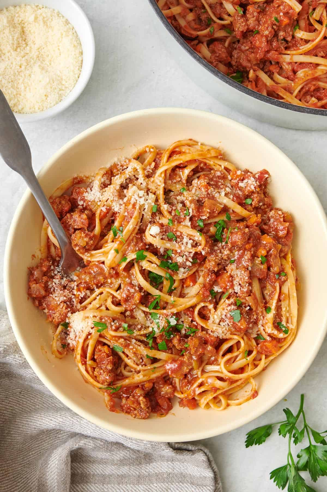

Mum's Special Spaghetti
Back to Home

A delicious & classic plate waiting to be dished to your loved ones
No artificial ingredients or tomato paste in this one, just a range of fresh vegetables, spaghetti, and meat, making a nutrious and wholesome dish to keep hunger locked up till breakfast
Ingredients
- Olive oil
- Onion (finely chopped)
- Garlic (minced)
- Carrot (finely diced)
- Ground beef (or meat blend)
- Salt and pepper
- Red wine
- Tomato paste
- Crushed tomatoes and tomato sauce
- Dried herbs (oregano, basil, thyme)
- Pasta (Spaghetti, fettuccine, or linguine)
- Parmesan cheese (for serving)
- Fresh parsley (for garnish)
Steps
- Get everything ready: Chop the onion, garlic, and (if using) carrot. Have all ingrefients nearb - this makes things easier
- Cook the sauce: Put the pan on medium heat. Add olive oil. Let it warm for 30 seconds
- Saute the vegetables: Add chopped onion (and carrot if using). Cook for 5 minutes until soft, stirring often. Add garlic, cook 1 more minute (don’t let it burn)
- Brown the meat: Add ground beef to the pan. Use your spoon to break it into small pieces. Cook for about 7–10 minutes, until it’s no longer pink.
- Add the sauce: Pour in the crushed tomatoes. Add oregano, basil, and water or a splash of wine. Stir everything together
- Simmer: Turn heat to low. Let it cook gently for 15–20 minutes, stirring occasionally. Taste it and add more salt/pepper if needed
- Cook the pasta: While the sauce is simmering, fill a large pot with water and bring it to a boil. Add a big pinch of salt to the water (important for flavor). Add the pasta and cook according to the time on the package (usually 8–10 minutes). Stir once in a while so it doesn’t stick. When it’s done, drain using a colander
- Mix it together: You can either: Pour the pasta into the sauce pan and mix it well. Or serve the pasta in bowls and spoon the sauce on top
- Finish and servce: Sprinkle Parmesan cheese on top. Add chopped parsley for a fresh touch (optional). Serve hot and enjoy!